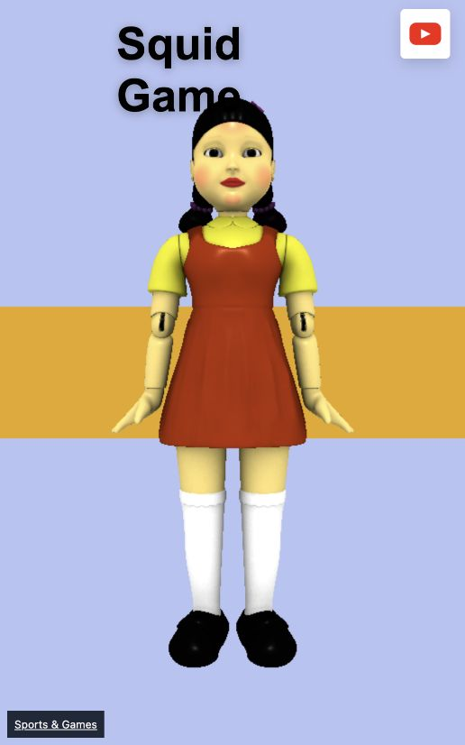

JavaScript · HTML Canvas
Red Light, Green Light — 3D Survival
Overview
A two-player 3D survival game with a fully rendered doll, timed movement and red-light detection.
Players must judge when movement is allowed and when remaining still is essential. The doll and the changing signal make the rule visible within the three-dimensional scene. The overview presents that timing-based survival setup and the two-player format, while the demo provides the interactive round.
What it includes
- Two-player movement
- Timed stop-and-go rules
- Three-dimensional doll and arena
